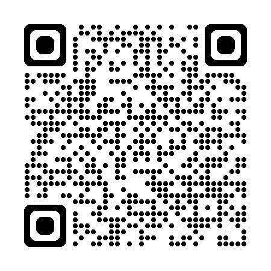

Sites modernos, bonitos e que ficam ótimos no telemóvel e no computador.
Olá! Sou a Ludnice, trabalho com front-end (a parte do site que as pessoas veem e usam) e comecei a criar sites para pequenos negócios e projetos pessoais.
Gosto de transformar ideias em páginas bonitas, simples de usar e que ajudam você a ser encontrado na internet.
Clique em um cartão para ver mais detalhes 👇
Simples, do primeiro contato até o site no ar.
Preencha o formulário de orçamento ou me mande uma mensagem.
Entendo sua ideia, o que você precisa e o estilo que combina com você.
Monto o site e mostro para você. Ajustamos juntos até ficar do seu jeito.
Seu site fica disponível na internet para todos verem.
One Page / Landing Page
Sites a partir de 75 €
🎉 Lançamento: desconto para os primeiros clientes!
Quero aproveitarAponte a câmera do celular para o QR code e veja um site que eu fiz.

Site informativo sobre o desenvolvimento de bebês de 0 a 3 anos, inspirado na abordagem Pikler. Tem as fases do desenvolvimento, dicas de rotina e brinquedos, perguntas frequentes e sugestões de leitura.
Abrir o site ↗Clique na pergunta para ver a resposta.
Depende do tamanho do site, mas uma página simples costuma ficar pronta em poucos dias.
Não! Você me conta sua ideia com suas palavras e eu cuido de toda a parte técnica.
Sim. Todos os sites são feitos para funcionar bem no telemóvel, no tablet e no computador.
Pode. Durante a criação fazemos os ajustes juntos, e depois também ofereço o serviço de manutenção.
Preencha abaixo e a mensagem já vai pronta para o meu WhatsApp. Sem compromisso!